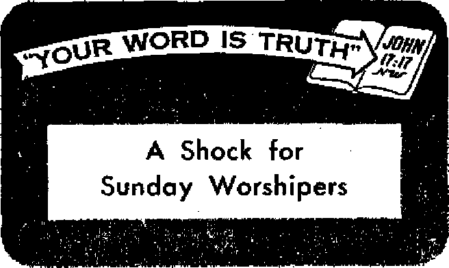

JANUARY 8, 1955 semimonthly
THE MISSION OF THIS JOURNAL
News sources that are able to keep you awake to th* vita! issues of our times must be unlettered by censorship and selfish Interests. “Awake 1” has no fetters. It recognizes facts, faces facts, Is free to publish facts. It is not bound by political ambitions or obligations; it Is unhampered by advertisers whose toes must not be trodden on; ft is unprejudiced by traditional creeds This journal keeps Itself free that it may speak freely to you. But it does not abuse its freedom. It maintains integrity to truth.
"Awake 1” uses the regular news channels, but is not dependent on them. Its own correspondents are on all continents, in scores of nations. From the four corners of the earth their uncensored, on-the-scenes reports come to you through these columns. This journal’s viewpoint is not narrow, but is international. It is read in many nations, in many languages, by persons of all ages. Through Its pages many fields of knowledge pass in review—government, commerce, religion, history, geography, science, social conditions, natural wonders—why, its coverage is as broad as the earth and as high as the heavens.
“Awake I” pledges itself to righteous principles, to exposing hidden foes and subtle dangers, to championing freedom for all, to comforting mourners and strengthening those disheartened by the failures of & delinquent world, reflecting sure hope for the establishment of a righteous New World.
Get acquainted with “Awake I” Keep awake by reading “Awake lM
PUBLISHED SEMIMONTHLY BY WATCHTOWER BIBLE AND TRACT SOCIETY, INC.
117 Adams Street Brooklyn 1, N. Y., U. 8. A.
N. H. Knorr, Prerideni Grant Suiter, Secretary
Five cents a copy
Printed this Issue: 1,300,000
Lentusw I* wkM the exulai li irtWIifcHi g.mlmoiiUily—Afrikaans, Entliih, Ftuntah, French, (kniw, Hollindiiii, Nctwkuui, Sptniih, dwediib. Monthly—Danish, Orort, huUawn, Umlnlm,
Offices Yeurly mbscriptiem Rate
ABlefiea, UX, 117 Adana St, Brooklyn 1, N.Y. *1 Auittulta, 11 Burford Rd., StraLhfleld, N.8.W. 8s Canada, 40 Irwin Ave., Toronto 5, Ontario |I Easland, 34 Cnria Terrace, Lendoc, W. 2 Ti Sorth Africa, Printe Bas, P.O. EJandafoateln,
Traturaal Ta
Rsnlttaam ifiould be rent to office in F<nr country in cqtnplknea with resuhtktis to fnarsntee delinrr at ntonvy. Remittances art ic?«pted it Brooklyn fna& touctritu where no offia Is located, by in term ttonrt nonef order only. Subscription r*tw jn dlffimt nuntrUs are here stated in local currency, Notin at expiration (with remwrt blank} la sent at leut two issues before subscription «i-pint. Chaaie of adireu when Mat to our office map ba ttpicted effective within one moatb. Send Four aid as well a* new address.
Entered as second - dis matter at Brooklyn, N, Y. Act of March 3, 1879. Printed In Tf> 8, A
CONTENTS
Gambling—Does It Square
The Language All Motorists Know —Honking!
The Parsis, Followers of Zoroaster
“Your Word Is Truth"
Jehovah's Witnesses Preach in
Volume XXXVI
Brooklyn, N. Y., January 8. 1965
Number 1
ONE of the greatest gambling crazes in history has gripped Japan. What is its significance? What are the effects? Students of gambling are now compiling data. They want to know how a mammoth craze affects the population, how it affects individual lives: the life of a physician, housewife, baby, pupil, executive and politician.
But first, what kind of game is involved? It is pachinko, an upright-standing pinball machine that has no blazing lights, no ringing bells; but it does have an array of nails protecting winning cavities. A lever kicks a steel ball around a board. If a ball falls into one of nine winning cubicles, the player gains ten new balls. The extra balls can be turned in for certain kinds of merchandise. What probably heightens the game’s enticement is the low cost of operation per play. Each ball costs about half a cent. Still the amount of money siphoned out of the public pockets by pachinko is by no means small. During one year Japan spent 100,000,000,000 yen ($276,000,000) on the machines, or 11.7 per cent of the entire national budget!
Pachinko playing can be detected from a distance by the hail-like pelting of the balls. In fact, the game receives its name from the sound it registers in Japanese ears. The players know well the habit of playing for hour after hour. Thus there is the spectacle of a “pachinko parlor,” where the machines are lined up row after row. Almost every machine will be in full blast with teeming addicts engrossed in them.
Reports on the effects of this gambling rage have, in many respects, been what experts expected. For example, take pa-chinko’s effect on executives of big industrial enterprises. They are not at all happy. This is because many pachinko shops have opened up near the exits of the factories. Workers—men and women alike—take their pay there and are promptly fleeced. This, in turn, adversely affects marriages. A 26-year-old wife was granted a divorce from her husband on grounds that he lost their savings to the pachinko machine. A husband in Osaka gained a divorce because the wife had turned into a raving pachinko-maniac. So overwhelming is the craze that doctors report cases of sprained thumbs resulting from an overindulgence. This affliction, being somewhat common, has become known as pachinkosis.
But though the craze may have its humorous aspects, its true effects are bitterly tragic. Two teen-age boys, after selling their personal belongings to play pachinko, sold their blood. When authorities took them into custody, they were too weak to talk. The New York Times, reporting on some effects, said that pachinko has “supplanted the lunch hour, lowered student book purchases and marks and made housewives neglect their babies. It has led to suicides and petty crime. . . . Many a Diet [Parliament] member has received and given support to pachinko owners, many of whom are tied in with local politicians and neighborhood hoodlums.”
Now as to the magnitude of the craze. Perhaps this can be best illustrated by author Edward Hunter’s startling description given in the Oregon (Portland) Journal of August 25,1954: "On my way back to Asia I stopped over at Las Vegas to see the highly publicized gambling centers. I never suspected that these would seem like small-time stuff when I returned to Japan. Imagine several gambling districts, each with as many slot machines as there are in all of Las Vegas, in each of the main cities of the United States. This will give you an idea of the extent of the ‘pachinko’ craze that has struck Japan. Cities such as Osaka outdo even Tokyo in this gambling craze. There has never been anything like it in Japan before, or anywhere else in the world. There is more gambling any day or night now in Tokyo than in Monte Carlo, Macao or Indochina’s Cholon.”
A colossal craze, sinister effects. What does the pleasure- and prize-seeking craze mean? It only intensifies mounting evidence of the sign of the "last days” of this wicked system of things: ‘Know this, that in the last days critical times hard to deal with will be here. For men will be lovers of themselves, lovers of money, disobedient to parents, without self-control, lovers of pleasures rather than lovers of God/—2 Timothy 3:1-4, New World Trans.
GAMJB ILiHW®-
bi
Does It Square mth*£hristianity?
E was a time when persons with two dollars to wager would have to travel to a race track or else find a dark alley. Not any more! They just go to church. True, not every church today has adopted gambling, but the number of churches that have is amazingly large; it would
bags, priz-parties, foot-1s and raffles, stakes may be ed "donations,” the players really
be much larger if many antigambling laws did not prevail. When it comes to this matter of filling church coffers with the help of "Lady Luck,” some people overanxious-ly point their finger at the Roman Catholic Church. If they were more observant they would notice that Protestant churches in significant numbers have also jumped on the try-your-luck bandwagon, featuring
tbWng bling
ontie, not to donate, but to take. Gambling is still gambling whether it is in church or a back-room saloon. So ons rightly ask, Does gam-with Christianity?
Many professed Christians say it does. They proffer five popular statements to justify church gambling: (1) The nation of Israel used lots; (2) church gambling is only small-time; (3) it is the abuse of gambling that is sinful, not gambling; (4) the Bible does not condemn gambling by
name, and (5) gambling profits go to a worthy cause; so the end justifies the means. Are these justifications for gambling sound? Can they endure the errordestroying light of God’s inspired Word, the Bible? It will be interesting to see.
Throughout >h« world millions of profotiod Christiana gambla dally. Many of thorn have asked questions about gambling, but too often they receive foggy answers. Is it true there is nothing morally wrong in gambling? What does the light from God’s Word reveal about gambling as a money-raising practice for professed Christian organizations?
First, the lots mentioned in the Bible. A careful reading of the Scriptures reveals that no lots were ever used by Jehovah’s people for pleasure or moneymaking purposes. No selfish gain was involved. No temples or priests were enriched. Only when a serious matter had to be settled were lots used. It pleased Jehovah that lots be used to determine his will in a controversy. That seeking God’s direction was the purpose of the lots, God’s Word declares: “The lot is cast into the lap; but the whole decision is of Jehovah.” (Proverbs 16:33, Darby) Since no money or amusement was connected with the lots used by Jehovah’s servants, the lots used by Israel and by the apostles cannot be used to justify gambling.
Is Church Gambling Insignificant?
Some say that any talk about church gambling is harping on trivialities, for such gambling, it is asserted, is small-time. In this regard a statement made by Life magazine a few years ago is thoughtstimulating. It said that more Americans risk money in church lotteries than in any issue of November 5,1952, said of bingo in just one country in Christendom, America: “Nobody knows how much money bingo absorbs annually but it must approach the stratospheric $1.6 billion [$1,600,000,000] wagered annually on the ponies.’’ So nickels and dimes count up. Many individual churches make gambling an elephantsized business. The Glendale (California) News-Press has a column “The Worry Clinic” by Dr. George W, Crane, a physician. In the issue of May 28, 1954, Dr. Crane wrote:
other form of gambling! The news magazine Pathfinder, in its
“Our daughter Judy attended a church gambling party here in Chicago... Among other gambling devices in full swing was a mechanical game which operated as a horse race. The parishioners were to lay their bets on any one of five or six ponies. After all the money was down the cleric would tamper with the machine so the winner would be the horse on which the fewest bets had been made. The church took in over $2,000 that night, on this one item, for Judy was asked to help tally the money and wrap it in packages for deposit. And that horse racing gadget was just one of many other gambling devices.”
So church gambling is hardly small-time. But whether gambling is- large or small, whether it is “abused" or not, is really not the vital factor. It is principle. If gambling is wrong, it is wrong to do it with nickels just as much as with
$5,000. The unbending principle^ we must never forget, is the one laid down by Christ himself: “The person faithful in what is least Is faithful also in much, and the person unrighteous in what is least is unrighteous also in much.”—Luke 16:10, Aew World Trans.
A Biblical Appraisal of Gambling
We can acquire an insight into God's view of gambling by noting what happened to the backsliding Israelites when they took up the vile habits of the pagans and began sacrificing to false gods and goddesses, some of which were deities of the gamblers: “Ye that forsake Jehovah, that forget rny holy mountain, that prepare a table for Fortune, and that fill up mingled wine unto Destiny; I will destine you to the sword.” (Isaiah 65:11, 12, Am. Stan. Ver.) Moffatt’s translation of verse 11 reads: “Spreading tables to Good Luck, pouring libations to Fate.” So the Jews incurred Jehovah’s fierce anger when they sacrificed to the gods and goddesses of gamblers.
Who were the ones that gambled in the Bible? Not Christians, but pagans. Pagan Roman soldiers gambled with lots for Christ’s apparel, not Christians. (John 19: 24) Indeed, Christ Jesus never gambled. What do you think Jesus would say if he walked up to a group of Christianity-professing people engrossed in horse-racing games, bingo, raffles and roulette wheels, all of them going at full tilt? Bible readers have a good idea, from the way Jesus dealt with the money-changers in the temple: “It is written, ‘My house will be called a house of prayer,’ but you are making it a .cave of robbers.”—Matthew 21:13, New World Trans.
We cannot justify gambling, then, on the basis that the word itself does not appear in the Bible. For in truth the whole tenor of the Bible condemns the rotten fruits of gambling. Jesus gave us a rule by which we can distinguish the evil practice from the good: “There is not a fine tree producing rotten fruit; again there is not a rotten tree producing fine fruit For each tree is known by its own fruit.” —Luke 6:43, 44, New World Trans.
Rotten Fruits of Gambling
Gambling corrodes morals. It eats away at moral fiber until it is weakened disastrously. Contentment vanishes. The gambler is never satisfied; he always wants more. “Double or nothing,” he says. As soon as “Lady Luck” abandons a gambler, dishonesty tempts him. Eventually dishonesty triumphs. The love of money is fostered, and that leads to all kinds of injurious things. (1 Timothy 6:10) This is to be expected. The Bible rule is: “Those who are in accord with the flesh set their minds on the things of the flesh.” Then the apostle explains: “Those who are in harmony with the flesh cannot please God.” —Romans 8:5, 8, New World Trans.
In the sight of most honest men church gambling is wrong. This means nothing to the clergy. They become so brazen that, if laws go against them, political pressure is applied to keep the gaming wheels spinning. The whole procedure is flagrantly contrary to the example of Christ’s apostles: “We ‘make honest provision, not only in the sight of Jehovah, but also in the sight of men’.” “We have renounced the underhanded things of which to be ashamed.”—2 Corinthians 8:21; 4:2, New World Trans.
Gambling foments disrespect for law. In 1953 two New Jersey candidates for governor tried to outdo each other by promising churches full exemption from the law against raffles and bingo. Thus some states have legalized gambling for churches, but in night clubs it is illegal. A double standard of morals has cropped up—with the churches decidedly on the lower level
uphold it. An example of this recently occurred in New York. It happened this way: Deputy Chief Inspector Louis Goldberg was commanding the special Brooklyn morals squad. One day he halted gambling at a Jewish synagogue and three churches (two Roman Catholic and one Protestant). Goldberg was merely enforcing state law, which prohibited all gambling anywhere. But Goldberg’s superiors had adopted a policy of winking at church gambling. Goldberg was demoted. Said the New York Times: “We had been wondering for the past week how long it would be before Deputy Chief Inspector Louis Goldberg’s number came up.” The whole city, the Times’ editorial suggested, had been waiting for the ax to fall on a policeman who would dare enforce gambling laws against the clergy. Churches and politicians hoped that the whole affair would be quickly forgotten. But never will many persons forget the sneering contempt for law that was thus spawned. Declared The Christian Century: “When an honest cop is broken because he threatens the illicit financial income of churches, the moral havoc resulting is beyond calculation.”
Children are taught to regard the clergy as shining moral examples. So when the clergy, as they did in New York, break the law for their own gain by using various forms of mass gambling, what does this teach the young? Can a child really think gambling in school or in an ice-cream parlor is wrong when he can do it or see it done in church with the blessing of the parson?
Morals sag even lower when the clergy use children as their pawns. Children who are little more than toddlers are seen selling chances for the clergy. Note this report in the San Francisco Chronicle of October 15, 1954: “Complaints charging nuns at a
Catholic school with violating the State’s fomia} yesterday,” The complaint, said the Chronicle, charged teaching nuns "with participation in a lottery and with contributing to the delinquency of children by having them sell the chances. . .. The district attorney said a 10-year-old boy came into his office yesterday and asked him to purchase a chance on a 1955 Cadillac.” And so juvenile delinquency is one grim outcome of church gambling.
Gambling encourages laziness. In his book Problems of Conduct Durant Drake, a professor of ethics, wrote: “Insidiously this getting of unearned money promotes laziness, and the desire to acquire more money without work. It makes against loving relations with others, since one always gains at another’s expense. It quickly becomes a morbid passion, an unhealthy excitement, which absorbs too much energy and kills more natural enjoyments.** Mental slackness, physical laziness—these are fruits of gambling, fruits condemned by the Bible. Christians are to work, not gamble: “Work with your hands, just as we ordered you, so that you may be walking decently as regards people outside and not be needing anything.”—1 Thessalonians 4:11,12, New World Transt
Gambling wastes energy, consumes time. Time is to be valued by the Christian. He must use it wisely in the study of God’s Word, to share in announcing the good news of God’s kingdom before the battle of Armageddon destroys this . hollow-hearted world. Not much more time remains for this, the “last days” of Satan’s system of things.—Revelation 12:12.
What a morbid passion gambling inflames! Bingo addicts abound. Said the New York Times of October 13,1954: “The bingo addict is no myth. She can be seen in New York and in New Jersey. She can be spotted by her gear. . . , She arrives early and stands in line before the doors open. She plays six, eight, ten and sometimes more boards at the same time, not just the two boards she receives when she pays her admission fee. . . . The spectacle of the bingo addict, usually a housewife, middle-aged or older, playing the game with fanatic concentration night after night in church, after church is dismaying to many people. The fact that she and her sisters by the thousands travel across town, into other counties and across state lines in chartered buses to larger games offering larger prizes is thought-provoking. *
Appeal to a Wrong Motive
That provokes the thought that it is not charity-giving that sends masses to church gambling halls, but, rather, prize-winning. Selfishness is the stimulus. The clergy want to get, not give. The parishioners want to get, not give. If there is no profit the clergy lose interest If there is no prize the players lose interest. So there is more than pleasure-seqking involved. Both the clergy and players want to gain something without rendering any service. Both want something for nothing. So instead of appealing to love, gambling appeals to the wrong motive—selfishness.
The early Christians gave out of love. Said the apostle Paul: “Let each one do just as he has resolved in his heart, not grudgingly or under compulsion, for God loves a ^heerful giver.” (2 Corinthians 9:7, New World Trans.) But what kind of givers does Christendom parade? Grudging givers! They must be compelled to give by some crafty enticement. A well-known columnist, Herb Graftis, once wrote: “Churches and charitable organizations run illegal gambling because that's the sure way of getting money for holy causes from people who wouldn’t otherwise con
tribute if the Almighty pushed a .45 [pistol] atthem.”
The Lbrd Jesus said: “There is more happiness in giving than there is in receiving.” But the motto of church gamblers is: “There is more happiness in receiving than there is in giving.” They even wear this contrary-to-Christ motto on their faces. Look at the smile of the winner, the frown of the loser. The gamblers are sad when they lose, happy when they win. So their happiness comes, not from giving to a church, but from taking from a church. One crestfallen bingo addict in Flint, Michigan, not long ago sued St. Nicholas Greek Orthodox Church for $4,000, which she claimed she lost over a two-year period at church. Really, there is no happiness in gambling.—Acts 20:35, New World Trans.
So all the specious attempts to harmonize gambling with Christianity fail. Coins may clank into church money chests, but the end does not justify the means, not when the means is opposed to the words of Christ and his apostles. True Christians give voluntarily. It is by voluntary contributions that the world-wide preaching work of Jehovah's witnesses is carried on. When right-hearted persons are brought the truth from God’s Word, the news of Jehovah's new world, they respond. The sheep, Jesus said, will hear his voice. They will not need the whir of the roulette wheel. The clergy have bare spiritual cupboards. That is why they have to resort to games of chance.
God’s Word does not square gambling with Christianity. Rather, it spotlights gambling as evil, as a sign of false religion. Those who hope for life in God’s new world will abandon gambling. And they will also abandon false religion, thus heeding the command: “Quit sharing with them in the unfruitful works which belong to the darkness.”—Ephesians 5:11, New World Trans.
REMEMBER the good old days when nylon stockings used to wear like iron? Every last pair of them seemed as if they could be worn over and over again without ever wearing out. But gone are those good old days! Today’s “supershcers" last only about half as long.
What has happened to milady’s nylons? Ever since the startling innovation was made available to the public in 1938, nylon hose have been improved steadily in construction, in fit and in sheer beauty. Government and industrial experts, who have the facts and figures from nylon tests and experiments, state confidently that the “miracle fabric” is as strong as ever, if not stronger. Yet, in those reminiscent prewar years, nylon was advertised as having filaments as ‘‘strong as steel” and possessing the delicate “finish of a spider’s web.” Advertisers today, however, are rather hesitant about making similar claims.
Statistics for the past two decades show that in the United States the ladies have been buying on an average per person one pair of nylon stockings a month. Why, this is scandalous! outrageous! Nylons should last twice as long! At least so the ladies think. Behind this outrage, however, lies one important fact, and that is that today’s nylons are only about half as strong as they used to be with only half the wear-life to them. For this sad state of affairs, manufacturers say, the ladies have no one to blame but themselves.
Catering to female tastes for sheer, sheerer, supersheer and sheerest nylons, manufacturers have spent a fortune developing stockings that are feathez* light, breathlessly thin, as soft as natural silk and as fleshlike in color as flesh itself. They have created hose for every combination of ankle, calf and thigh measurements; a stocking to fit any leg. Particular attention has been devoted to designing nylons so that they make women’s legs look nice —nice in themselves and nice in relation to her dress, her shoes and her entire costume. But these added luxuries have come at a greater cost—the cost of making the stocking more fragile, thus more susceptible to snags and irritating long runs.
Like with all delicate and fragile items, their life can be extended by treating them very gently. The first secret of preserving a delicate hose is to get the right size and fit. The next thing is to wash it after each wearing to remove the soil and, more important, to restore it to its original shape. Extreme care should always be taken when handling nylons. Hands and nails should be perfectly smooth, because a snag spoils the sleek appearance of the nylon stocking and all too often turns into a run. When washing or otherwise handling your nylons, check to see if you are wearing a ring that might cause a snag. It pays to be cautious. Also, a body lotion on rough legs and
feet will keep them smooth, thus decreasing the possibility of damaging ‘ the hose when slipping them on. By following simple rules for care, even the sheerest stockings will respond favorably with long wear-life.
As Strong as Its Sheerest Link
The natural strength and life of nylon hose are in its weight. A denier means the thickness of the yam. It represents a "unit of measurement expressing the fineness of nylon in terms of weights in grams per 9,000 meters of length.’’ Gauge, on the other hand, means the distance between the knitted loops of the mesh and is expressed in terms of number of loops. Therefore the lower the gauge and the lower the denier, the sheerer the stocking. A 40-denier nylon is appropriately referred to as a "service weight” nylon. Nurses, who are'on their feet a lot, very often wear as heavy as a 70-denier stocking. The sheerer the hose the shorter its wear-life. Prewar nylons were no sheerer than 40-denier. But today the popular hose is only 15-denier. Naturally, then, women should not expect 15- and 12-denier hose to wear as long. In fact, they do well to wear half as long as did the prewar brand, because with each decrease in denier there is an increase in fragility and hence an enlarged possibility of encountering snags and runs, thus shortening its wear-life.
With these points in mind, the following quotation from the New York Times will help us to understand why there have been growing complaints about the life of nylons. “In 1947,” says the Times, “17 per cent of full-fashioned nylon hose production was 15-denier. In 1948, this percentage had risen to 35 per cent; in 1949 to 62; in 1950 to 74; in 1951 to 79; in 1952 to 81, and in 1953 to 88 per cent. The 1953 figure also includes the new ‘sheerest’ nylons, which are 12 and 10-denier. As* for seamless hose, 96 per cent of that production was 15-denier in 1952.” In other words, when women began to forsake the 40- for the 15-denier stocking, their troubles began. It is all a matter of choice, which means either a heavier nylon with a longer wear-life or a sheerer nylon with a shorter wear-life. At the moment, there are no other alternatives.
Maintaining Popularity
What the women desire most is well indicated in last year’s sales. More than two hundred times as many nylons were sold as the combined total of rayon, cotton and silk stockings. The above-mentioned authority reports that “last year 50,334,631 dozen pairs of full-fashioned nylons were produced in this country, and 6,271,393 pairs of seamless nylons. This compared with 148,574 dozen pairs of full-fashioned cottons, 11,715 dozen pairs of silks and 45,672 dozen pairs of rayons.”
But not all buyers are attracted by the sheerest stockings. The United States army, navy and air force still order 40-denier nylons. The female recruits get only six pairs for a start. Even though she can obtain the regulation 40-denier nylon for 60 cents a pair at a canteen, her preference for the sheerer nylon remains undisputed.
So, to please the ladies, even the United States navy has weakened slightly. According to Bess Furman, the navy is "changing its specifications from 40-denier, 45-gauge (that means forty-five knitting needles each inch and a half) to 30-denier, 51 gauge. The machines that make the 40-denier type are becoming obsolete but the Navy, though told that weight makes all the difference, is hopeful that a few more threads will help make up the 10-denier difference.”
How long women will go on insisting on supersheers is anybody’s guess. Some hopefuls predict the tide to shift to a heavier
denier any time now, They base their prediction on the pattern that silk stockings left behind. There was a time when silk stockings went from 4-thread to 3-thread to 2-thread, and then leveled off at 3-threacL So these hopefuls say that as soon as the ladies realize that they are sacrificing wear-life for sheerness, then, look out! Gone will be the days of the supersheer nylon. However, this appears most unlikely, Can you imagine milady quibbling over a few pennies or the wear-life of a stocking that fills her with personal pleasingness and charm? “After all/’ she will say, “I spend so little on myself/I’m entitled to at least one pair of nylons, am I not? And these do feel so won--der- ul!”
Cheap Stockings No Barg ,
There are some women who insist on the impossible. While they do not expect a $3.98 house dress to be so becoming or wear so well as a $60 dress, yet these very same shoppers demand that an 89-cent pair of nylons match or outmatch, wear as well as or outwear a $5 pair. Why? No one, it seems, can explain. There are some low-priced nylons that do wear well, but this is the exception, not the rule.
Are not all nylons inspected before they are shipped to stores? Yes, But do not rely too heavily on this one fact alone. Nonbrand manufacturers cannot afford to be too critical. Every pair of nylons that is discarded represents a loss to them. Manufacturers of well-established brands inspect all stockings minutely before they reach the stores. They cannot afford to permit any imperfect pairs to reach their customers under their label, because each defective pair of nylons sold represents a customer lost. If there is even the slightest flaw in fabric, color or dimension the stocking is marked “irregular” and must be sold at a considerable markdown. “Seconds” are stockings that have repaired breaks in the fabric. These are even cheaper than the “irregulars,” Most brand-named manufacturers do their business on a long-term basis. Their desire is to establish regular customers who will insist on their brand. Nonbrand firms do not take the time or the trouble. They are not trying to make a name for themselves that the customers can depend on. All they are interested in is making a sale. To purchase hose without a brand name is to buy at a considerable risk to oneself.
The magazine MadamoiseTle offers this good little bit of advice. It says: “Expensive nylons will cost you less in the end. You’ll never get stuck with stockings that run before you put them on. Your stockings will stay in shape—branded nylons are proportioned to fit you, nonbranded nylons aren’t. Your stockings will always match. When you pay for higher gauges —60, 66, 72-75—you’ll be sure you’re getting them: brand nylons are never mislabeled, nonbrand nylons may be. And. the more stitches to an inch the smaller the loop, the less chance for snags and runs.”
So the next time you shop for nylons, be wise, economize by treating yourself to a better pair of nylons. And the moment you slip into them, they promise to become a hit, with no runs, no errors.
<L Found in the belly of a 2,OOOpound shark, caught near Nagasaki, Japan, on Saturday, October 2, 1954, was the body of a 13-year-old boy, still wearing a shirt and white linen pants. How about it, scoffers? Do you still think it Impossible for the great God of the universe, Jehovah, to prepare a fish large enough to swallow Jonah and house him for three days and nights?—The report was in the New York Times of October 6, 1954.
The Amaxing Antarctica
By "Awoktl" torr«ipond>nt in Auttraiia
AN you Imagine a land buried in perpetual ice in most parts to a depth of 7,000 feet? ___ Can you imagine a land with a summer temperature of about 12 degrees Fahrenheit below freezing point? Can you imagine a land where winter temperatures may drop lower than 80 degrees Below zero Fahrenheit? Such a land really does exist. And here is the surprise: it is a land area almost equal in size to the combined areas of Australia and the United States! Yet it is the least known of the continents of the world—Antarctica. For many generations this vast continent has fired the imagination of exploring men. ■
<[ The continent of Antarctica itself is a roughly circular land mass centered around the South Pole. At no point does it come closer than 600 miles to any other land. Located some 200 feet above a plateau, which, in turn, is 10,000 feet above sea level, is the South Pole. It is fjere that the thickest layers of ice are found.
€, Temperatures in the Antarctic are colder than at any other part of die world, averaging five degrees colder than any corresponding latitude in the Arctic. Average wind velocity in the southern region has been recorded at 50 miles an hour. But on several occasions wind has blown steadily for a considerable time at well over 100 miles an hour! (Winds over 75 miles an hour are classified as hurricanes.) Such persistent winds are unheard of in other parts of the world,
< It almost seems as though this land set out to defy exploration. For the barriers presented, as stated in Phillip G. Law's The Antarctica Today, are threefold: (1) Winds of gale and hurricane force; and after these have been weathered, (2) seas frozen to a depth of three to four feet, and then (3) the final but toughest barrier of all, land ice or glacier Ice. This last is formed by ice moving over the polar plateau into the sea until large sections, sometimes 100 miles long and 60 or more feet high float free from the land. Some of this shelf ice, as it is called, has been known to extend 100 miles beyond the limits of the land. C It has been more than forty years ago that an Australian expedition has set foot on the Antarctic mainland. But on December 12, 1953, the "Kista Dan,” a Danish polar vessel chartered by the Australian government headed toward the land of many barriers. The purpose was to relieve teams of scientists already established on Heard and Macquarie Islands in the Antarctic, and also to establish, if possible, for the first time a permanent station on the mainland itself.
< The team of scientists who set out in the Kista Dan into a land of almost unknown qualities achieved their main objective by establishing a permanent camp on MacRobert-son Land, On February 11,1954, the Kista Dan was finally brought into a deep flordlike harbor. On February 13, the task of establishing the station began. Unloading operations proceeded smoothjy, but at any time during the operations a strong storm could have driven the ice between ship and shore out to sea, C The ice bearing the brunt of the work at the ship’s side was thinning, even sagging. Great risks had to be taken running weasels (tractoriike vehicles) over it during the concluding stages when it was only six inches thick. Temperatures were consistently 10 and 15 degrees below freezing. As the sea passage in the ship’s wake was freezing over more thickly each day, the passage had to be opened up again by taking the ship out to the open sea, about three miles away. For the next four days the weather was perfect with light breezes and warm sunshine. Expedition members worked unflaggingly at assembling huts. On February 22 the afternoon was declared a half holiday to permit the wintering party to write letters before the ship's departure.
The team of scientists were to be completely isolated for twelve months. No doubt the men expect to discover much and thus be able to shed light on many of the- mysteries that this frozen part of the world has held secret for so long. What they will discover, and what other secrets the great Creator of the amazing Antarctic, Jehovah God, holds, man does not yet know. But no doubt there is a great deal to be learned now. And a further great storehouse of information regarding this strange land will be opened up in Jehovah’s righteous new earth, for that new earth will also include the great, now-frozen land of the Antarctic,
Communis titrwl oversfiadowtil by group mHI
By “Awake!” correspondent ill Japan
THE bloody dagger of communism in the I ( » i iniu> t ti'iui ) urea to Indochina.
Now it has turned again, and rises 'to strike toward. Formosa. The question of American u mi'I inh I,'ilium t uni''. Io ilo lure, as Formosa is a key link in* the island chain ttat stands guard against the Communist hi'ml iinl 'H I'lull.. Hunk <uu' link in . the Japan-Okmawa-Formosa-PhU-ippines chain and not ditty would the West’s .line of defense in the Orient, crumble, but America’s own front line would retreat to her own shores. Moreover, America’s prestige in the Orient would be irreparably damaged, by such a defeat,
Red bombings ’ of Quemoy, the first island-hop .in' the direction of Formosa, have again alerted the West, to the danger.
Formosa is important strategically. It also has a population of over 8,000,000 —as many as Australia-.....and it has the
sixth-largest army in the world today. It is a rich country productively, being one of the few in Asia, that are' able both to iiii|i a i ill in I' > in ( ' h l|> U| | ort others also. If communism could engineer its fall, Formosa would be a prize rich in. the picking.
The danger to Formosa is internal as well as external. The government of Chiang I ii Io I i ill Inn 'I In llii liiliu.l oil hope of reconquering the mainland of China.. His army, unable to draw new recruits, will soon be comprised of old men—according to Oriental, standards it is old already. And now it looks.as though the mainland is making ready to come in Chiang’s direction. American news correspondents re
port: that the war of nerves is already having its effect in Chiang's capital of Taipei. They say that the president is “firing”
n"i>ib jiuI .ulmi ii'.ii.ihu , toibihrt .mil III I'lUirhu Inure II I 'lb [tore' I u nrnc who are ill-suited, to. aff airs of government-
President Chiang is also surrounded by six-and-a-half million native Formosans, or Taiwanese. Concerning these, Washing* ton columnists Joseph and Stewart Alsop recentlywi l< 11 'linn > n>« bin i ci )> pi, ul u Hi ti ,jts propagandists claim.” The Form » it> n । i I in i lu ang and Ms army to come to Formosa, th. I I, f )n l i f t Im । i 11 > < 111 । 11 । 11 •ere met by armed insurrection, so that two • livi'mii ul 11'I,ips h ui bi In in lied m from the mainland to quell the disturbata There appears to be little love b, i • n fin Formosans and the Chinese. The Formosans want Formosa for the Formosans, and not as a. wrangling ground between Bart and West
A tetter signed "A Formosan,” appearing in the Tokyo Nippon Times' on October 2, aptly sums up the general Formosan attitude to both Chou En-lai and Chiang Kai-shek:
“Morally and legally Formosa has no relation to the Chinese* civil war, and consequently we Formosans have not any responsibility to it. . . . We have the right to it luu i A in I I । Inn, <i nil । and to, decide the fate ", I on (iin i hire'd urn b
January », ass
13
principle or the right or racial seir-aeter-mination. The stipulation of the Cairo Declaration in regard to the disposal of Formosa is invalid in that it ignores the will and interest of the people of Formosa. .. . To change the sovereignty of Formosa against the will of her native islanders is the egoism of large powers, and without question it is an imperialistic attitude ignoring fundamental human rights.”
In the event of a hot war, what kind of assistance will the native Formosans provide the Chinese Nationalist government? As Formosa staggers through the cold war, she appears to be beset by real dangers, both external and internal.
The Greater Peril
However, the greater peril to the Chinese government in Formosa lies in the judgments that must come upon it from Almighty God if it persists in its opposition to Jehovah’s witnesses and to the free circulation of the Bible in the island. This opposition continues down to the end of this year 1954. The opposers have failed to consider the words of Gamaliel concerning Jehovah’s witnesses: “Do not meddle with these men, but let them alone; (because, if this scheme and this work is from men, it will be overthrown; but if It is from God, you will not be able to overthrow them;) otherwise, you may perhaps be found fighters actually against God.” —Acts 5:38, 39, New World Trans.
This meddling with the lawful Christian work of Jehovah’s witnesses was begun by the Japanese and was marked by cruel tortures. When the Chinese Nationalists came to liberate Formosa, the Chinese police continued the persecutions where the Japanese left off. These persecutions are entirely uncalled-for. Jehovah’s witnesses are a humble, law-abiding people. Most of them in Formosa are Ami-tribesmen, who toil peacefully and honestly in the nee tieids. They pay their taxes. They are not politically-minded like many around them who make a pastime of speaking against the government. Jehovah’s witnesses respect the government. However, Jehovah’s witnesses are the ones who are persecuted.
In an endeavor to gain relief, documentary evidence was submitted to the provincial government during 1954, protesting against the many indignities committed against male and female witnesses of Jehovah and against the Bible, under the Chinese Nationalist regime. Here is the translation of a typical affidavit signed by seven ministers of Jehovah’s witnesses:
“We were put in prison for seven days. . . . The tortures inflicted were as follows: To make us give evidence, we were taken one by one to separate cells, made to kneel on the concrete, and were severely struck and clubbed, till we bled freely from nose and mouth. We were beaten and kicked all over the body, until some of us were unconscious. We were tortured repeatedly. At the second occasion of torturing, the seven of us were assembled together, and were told, ‘You must abandon your faith! You must abandon your faith? Despite strong threats, we replied, ‘We will not!’ The police got angrier and angrier, and struck us with clubs repeatedly. The tender part of Lin Kon Mei’s right breast was prodded repeatedly until the color drained from his face, and he became unconscious. He is unable to do heavy work until this day.”
The official reply given to this and eleven other affidavits of protest stated only this: “The government has not received any report of maltreating Christians. Please do not listen to one-sided stories. However, all unlawful acts are forbidden by the government” There was no apology, just a closing of the eyes to the dastardly indignities committed by the Chinese police.
However, these acts of violent persecution have recently died down, only to be succeeded by a more subtle method of “meddling” with the Christian witnesses of Jehovah.
The Bible Banned!
When William Tyndale started work on his translation of the Bible into English, he declared: “I will cause a boy that drives with a plow to know more of the Scriptures than the great body of clergy now know.” The Bible in the language of the common people has spread throughout the world since that time, so that even the boy that drives the plow in the rice paddies of Formosa may read it. Many of these have become Jehovah’s witnesses. And because they now “know more of the Scriptures than the great body of the clergy” in Formosa, it appears these clergy have prevailed upon the government to restrict circulation of the Bible in the only language that the plowboy can read—the Japanese language.
For a long time the Formosan government has waged war on the publications of Jehovah’s witnesses, prohibiting their entry into the country, and confiscating them from the private homes. However, during the past year this campaign has been extended against the Bible itself. No longer is it possible to send Japanese-language Bibles into Formosa. No longer is it possible for one of Jehovah’s witnesses in Formosa to keep a Bible safely in his house, unless in a place of hiding. This is borne out by the following statements taken from among the affidavits presented to the government by Jehovah's witnesses in Formosa in 1954:
“On November 4, 1953, I was called to the area police station, and ordered to take my Bibles there immediately, so that the Police seal could be stamped in them. In all good faith, I did this, but the police confiscated the two Bibles, and did not return them. They said they would send them ‘above* and advise later. As yet, I have received no further word of the Bibles.”—Lin Mo E.
“On November 9, 1953, a police officer from Zuiho entered my house, opened the drawer of my desk, and took from It my Japanese Bible. The policeman said he must send it to headquarters, but not to worry, as it would be sent back again. But no word of it has been received until this day.”—Lin Ko Oh.
“On November 23, 1953, at 30 minutes after midnight, a police officer from the Ruya Area station entered my home quietly like a thief, and, without speaking or awakening anyone, took one Bible from a clothes box. When I woke up, he said, T must send this Bible up above. Please await further word.’ I have not received my Bible back.”—Ko Ei Ka.
When these violations of religious liberty were protested to the provincial government of Formosa, the secretary-general, Dr. Dison H. Poe, replied in writing: “As the government is encouraging the use of the mandarin (standard Chinese) in the mountain areas, the use of the Japanese language is restricted.” The secretarygeneral explained verbally that in order to read the Bible Jehovah’s witnesses in Formosa must learn either Chinese or English. But Mr. Secretary-General! How can humble farming folk, who have read only Japanese all their lives, now turn around and learn these difficult new languages? Even if they gave up their farming to find the time, it must take the best of them several years! And during all that time, are they to be deprived of the privilege of reading the Bible? To which the secretary-general’s only reply was, “They must learn Chinese if they want to read the Bible.”
At the same time the secretary-general insisted that there was freedom of religion in Formosa, and pointed to the fpct that in Taipei there is a church on nearly every corner. It is true that whoever walks or ‘‘rickshas” the streets of Taipei will see many churches. But are these church buildings a guarantee of religious liberty? No more so than the temple in Jerusalem guaranteed religious freedom to Jesus when he preached there!
The visitor in Taipei will also see many bookstores, and in the bookstores he will find many cheap Japanese novels, magazines, comics. Apparently the government ban on the Japanese language does not extend to literature of a lighter vein. The people may read “trash” in Japanese, but the Bible—well, that is different! Indeed, great darkness threatens to descend on Formosa, the darkness of the “Dark Ages” Of centuries gone by. It was then—and compare Formosa now!-—that “the boy that drives the plow” was denied access to the Bible, except through the clergy or an unfamiliar tongue.
Whither Formosa?
Here is a country that continues to suppress its best citizens. Jehovah's witnesses are that kind of citizen, because they obey the laws that make for good citizenship. Eight times they have applied for lawful registration as a religious organization, but, while these applications get lost in a maze of red tape, the government keeps on telling them, You must not preach until you are registered!
Jehovah's witnesses in Formosa continue to make supplication for “all those who are in high station, in order that we may go on leading a calm and quiet life with full godly devotion and seriousness.” (1 Timothy 2:2, New World Trans.} They respect the government, and try to do right by the government. The recent tremendous growth in the number of Jehovah's witnesses in Formosa provides no threat to the government. Good citizens who hear and heed the message of Jehovah's kingdom only become better citizens.
However, if the Chinese government of Formosa continues to “meddle with these men” through persecutions or Bible ban-nings, it must expect the wrath of their God, Jehovah. As the Jerusalem that persecuted Jehovah’s prophets was destroyed by the hordes of Nebuchadnezzar, and the Jerusalem that outlawed Jesus and his disciples was destroyed by the hordes of Rome, so Nationalist China stands in grave danger if she persists in “fighting against God.” May she awake to her danger before it is too late, and grant the religious freedom that is the rightful heritage of Jehovah's witnesses of Formosa.
’heads absent without love’
<L Describing the present-day churchgoer, Simeon Stylites, in a letter to The CTiris-tian Centuryt July 14, 1954, said; "In Muslim countries worshipers leave their shoes outside when they enter the mosque. In Christian countries, alas, it is different. People often leave their heads outside when they enter church. Many a pastor has sat in blank wonder over the apparent miracle that some of the richest men on the official board ever managed to keep out of the poorhouse, They do not bring into the work of the church the headwork that they put into business. Does not much of our trouble come from bodies from which the heads are absent without leave? The difficulty about massing any great moral and religious force against flagrant evils in our country is that too many people operate by tradition and not by headwork.” But is not the real reason for these "Christian" heads’ being absent without leave that the clergy have spiritually starved the churchgeer, feeding him the husks of tradition and politics instead of the meat of the Bible?
rpHERE is something marvelous X about a hose. So let us highlight this marvel of the nose by getting acquainted with the keenest noses in nature. Whose nose is so keen that its possessor identifies comrades solely by the sense of smell? Whose nose is so keen that its owner has been called the champion “smeller” of the insect world? Whose nose is so keen that it can detect the scent of man several miles away? Whose nose is so keen that it can detect leaks in underground gas mains that are too
jxeAme© v
HOSJEJS in Nature
MT*
small to be registered by a meter? Whose nose is so keen that it can follow a scent over dry land where no tracks are visible and still hold its nose chest high? And whose nose is so keen that it can distinguish the amazing number of 16,000,000 odors? Intriguing questions these! The answers will spotlight the keenest noses in nature.
By the word “nose” we mean the olfactory orgpn, the organ of smell, which varies in different creatures. Thus the antennae or “feelers” are to insects what the nose is to man. Some insects, surprisingly enough, have a sense of smell that is truly wonderful. Why, any bee that ventures to buzz into a strange hive does not die of old age; it is put to death. How do sentry bees identify the foolhardy stranger? Since the odor of a foreign beehive clings to the invader, the sentries, thanks to their noses, catch hivebreaking bees red-handed.
Certain ants also know their comrades through the sense of smell. When their organs of smell are cut off, these ants fall with the greatest fury upon one another. Probably the champion smeller of the insect world is a moth (who would guess it?). This moth seemingly can scent a female moth, during the mating season, more than two miles away!
Snakes, Deer and Elephants
One hardly thinks of snakes as having much of a nose. Yet snakes have an unusually strong sense of smell. The tongue assists by catching the smell particles from the air. Some serpents, such as the American black snake, make their living by their nose, hunting largely by scent.
Many are the mammals with keen noses. Musk oxen have noses so sensitive that the slightest taint of wolf odor on the wind sends them off like a stampede of buffaloes. The deer family also finds that much protection comes by way of their noses. If the wind is blowing toward a deer, elk or moose, a hunter might as well not attempt a stalk. Then there is keen-nosed Mr. Bruin. Yes, bears have extremely delicate noses. The great Alaskan brown bear, the largest carnivore in the world, has such a keen nose that the taint left by a man’s recent tracks, or the faintest odor on the breeze, starts him off at full speed.
Wild shtjep use their keen noses in a clever manner, according to a hunter who had this experience in the Altai Mountains of Mongolia: nA herd of sheep usually fed on a steep slope in the early morning. When the sun was high they retired to a narrow ridge connecting two peaks to sleep away the midday hours in plain sight. Always an old ewe acted as a sentinel. For an hour or more after the sheep were lying down, she would stand on a rocky spire above the saddle, gazing in every direction. At last, satisfied that it was safe, she would settle herself with the rest. Then my Mongol hunter and I would begin the stalk, being sure that the wind was blowing from them to us. But never could we approach near enough for a shot Always the herd was up and off. At last we realized that the reason they selected this particular ridge day after day, and attempted no concealment, was because the air eddied in a peculiar way about the saddle and brought odors to their noses no matter from what direction the wind was blowing.”
Then there is that mammoth creature with the elongated nose. His trunk is his nose and at the tip of it are located the nostrils. When a wild elephant raises his trunk high and waves it slowly from side to side, some scent of danger is usually in the air. So hunters can approach a herd only upwind. But if the wind is right elephants can detect the scent of man several miles away!
Bloodhound—Tracer of Missing People
Now that animal with the phenomenal nose, the bloodhound. He has a well-known job; he tracks down missing persons. His specialty is fugitive criminals. If a shoe or garment of the desired fugitive or an authentic footprint can be shown this dog, he will sniff the article until he has the scent. Then he picks up the trail It makes no difference whether tracks are visible. And it is useless for a fugitive to walk fences, double back on his path, climb trees, pass through a herd of cattle, step in the tracks of another person or even cover his tracks with red pepper. Such stratagems will not outwit this keen-nosed animal.
Since the bloodhound has one of the most interesting noses in nature, it would be well to clear up a few false ideas about him. First, his very name makes it appear that the dog lusts for blood. In reality the bloodhound is not bloodthirsty. He tracks down men because he just likes people. He likes people so much that his idea of having the grandest time is to track down a man, any man at all. He is probably the gentlest and friendliest of all dogs. So unless otherwise trained, the bloodhound never attacks a man; he would rather lick the man's hand. Then why his sanguinary-sounding name? It is said, when the Normans introduced the St. Hubert breed into England about 1066, the dogs were bred with the English Northern and Southern hounds. The result was the blooded hound. Over the centuries the name was shortened to bloodhound.
When tracking down persons, do bloodhounds always bay like the Hound of the Baskervilles? Some people think they do. But because it would forewarn armed criminals, bloodhounds are trained nowadays to trail their quarry quietly. Another misconception about bloodhounds is the idea that, even with a fresh scent, they must always keep their noses flat to the ground. Since a person’s scent is not just in his footprints, but hovers over the ground, bloodhounds carry their noses chest high. Then there is the false belief that the foxy strategy of wading in water will befuddle the hound. But since a man’s scent lingers above water much as it does above land, the hound can readily follow a trail while swimming.
So amazing is the bloodhound's nose that, depending on the weather, he can follow a trail three to four days old. These canine noses can follow a human trail for a hundred miles. Once a bloodhound led detectives 138 miles—and found its man. A Kentucky bloodhound named Nick Carter sent 600 fragrant fugitives to jail. A real tribute to the bloodhound’s keen nose lies in the fact that bloodhounds are the only dogs whose identification of a criminal by smell is accepted in courts of law.
Another tribute to the bloodhound comes in a report showing that their noses are better than gas meters for detecting leaks in underground mains. At Monroe, Louisiana, dogs traversed a three-mile line just after it had been checked by the conventional leak-meter method. The bloodhounds confirmed the meter, but they also found a few leaks that the meter crew had missed!
The Nose Extraordinary—Man's!
After learning of the bloodhounds’ sniffing exploits, we may feel that the human nose is hopelessly outclassed. But cheer up. For the human nose can learn to recognize at least 10,000 distinct odors and detect the most fantastically tenuous odors. Many professional perfumers memorize at least 7,000 different odors. Memory seems to hold smells very closely. In fact, an odor may bring back the recollection of events long forgotten. Smelling, then, is an extraordinary, complicated process, involving nose and brain. In their recent study, Dr.
R. H. Hainer and his associates of the Arthur D. Little Company reached the following conclusion about the human nose:
In each nostril there is a lobe about as big as the end of the thumb. This lobe is made up of some 1,900 “telephone exchanges” called glomeruli. Each of these sends 24 neurons to the brain. These neuron bundles can be compared to a board with 24 lights. So when an odor is detected, certain ones of the 24 neurons “light up/' to form a code for that particular odor and nothing else. With only 24 neurons, it is possible to get some 16,000,000 patterns, corresponding to as many different odors. In other words, according to this new theory, the human nose is equipped to distinguish about 16,000,000 odors!—Science News Letter for May 2,1953.
So you see there is much that is marvelous about our own noses. Never need we feel that the human nose lacks excellence. And what rapturous joys it can bring to man! Why, there are thousands of joyproducing odors: the redolence of the morning rose, the tang of the ocean breeze, the enchanting aroma of an exotic perfume, the beckoning bouquet of the early morning coffeepot, the tantalizing savor of a roasting turkey, the luscious scent of a rich, producing vineyard, the zestful crispness of a tangy autumn day, the purity of rain-swept air and the exquisite fragrance of the pine-fresh mountains.
With keen noses and perfect health, how exhilarating will life be on the paradise earth in Jehovah’s new world!
Outfoxing the Fox
At Monticello, New York, a former airman collected $915 in bounties for trapping the incredible number of 305 foxes in just two months. Asked about his trapping technique, the man explained that he discovered a special scent in India. He declined to disclose its formula, but said that it would attract a fox five miles away. So Reynard has finally been outfoxed,
but It took a man with the secret oriental scent to do it. We wonder whether compliments are due the man who discovered the fox-luring scent or due the fox whose nose is so keen it seemingly picks up the scent miles away.
INFORTUNATELY, tnere are more experts in horii honking than there are in auto driving. This, of course, has raised a few ear-annoying problems throughout the world. The •problem is handled differently in the various countries of the world. But most of them agree that horn honking should be curbed. Still there are places, such as New York or Port-au-Prince, where the horn-happy motorist can remain in a perpetual state of boisterous bliss. At the other extreme is Caracas, Venezuela, where tooting the horn will, in a remarkably quick time, ruin one financially.
'g» Caracas has an amazingly effective way of handling its problem of raucus toots. For honking the horn brings a policeman, and the motorist winds up paying a fine of $105. This ban on horn honking is in effect day and night. If a driver wants to warn a pedestrian or another motorist, all he can do is strike the side of his car with the palm of his hand. This results, especially for the anxious driver, in the production of hand callouses. But the over-all picture is one of reduction of traffic accidents, qg In Bogota, Colombia, an antinoise campaign was inaugurated in 1950. It had some gratifying results. However, according to newspaper reports, the city has reverted to its normal condition—its "noisy normal.” Auto horns now blend in with the cacophony of blaring radios and jukeboxes and the cries of newsboys and lottery venders.
In Rio de Janerio, Brazil, honking is not banned, except during those hours when people want to rest: 9 p.m. till 1 a.m. But it is said that traffic policemen go home at 8 p.m. Sc citizens of Rio de Janeiro have a fair amount of honking noise to contend with, but the pedestrians particularly appreciate the noise—it gives them a chance to jump.
Port-au-Prince, Haiti, may well be the paradise of horn-happy motorists. Says a report in the New York World-Telegram and Sun, (September 22, 1954): "There is no horn honking problem in Port-au-Prince. When you start your car, you start your horn and keep it going. However, many motorists ease up on the horn occasionally for a moment to rest themselves or to give it additional emphasis when they start again.*’
In Copenhagen, Denmark, there is traffic noise, but horn honking is not considered exH cessive. There is no ban. The most dis agree-able noises come from motor bikes and motor m scooters that, like a swarm of locusts, have m swooped down on Copenhagen. The police be-JJ gan an antinoise campaign and compelled the m scooter drivers to put back their silencers, which had been removed to increase speed.
H In Stockholm, Sweden, horn blowing has M been curbed ever since 1936. So horn-happy m motorists are rare. In thickly populated areas h a motorist may honk only to pass a car ahead H or to avert an accident.
* £ Paris, France, was once noted as one of the H world's noisiest cities, But the ear-splitting t} tooting came to an end on August 1; a law * went into effect forbidding horn blowing ex-cept in the case of imminent accidents.
g In London the horn is not a big problem.
5 Motorists know that if they honk tbo loud or JJ too long or honk at all in a stationary auto, M except in a traffic jam, they may be arrested. h Honking is forbidden in built-up areas, and * that includes nearly all the 117 square miles m of London, between 11:30 p.m. and 7:30 a.m. H £ New York is noted for drivers that rely
heavily on the horn. Almost every New York motorist Is familiar with the persistent tooting h that comes from autos when the first motorist jl fails to make a jack-rabbit start as the light j* changes to green. Said the New York Times: m “Traffic in the city is bad enough without hav-ing to pay heed to assorted horns pressing for clearance which is rarely available in any m event.”
g Rome, Italy, seems to have outdone New H York for sheer traffic noise. When Dr. Fritz R Reiner, conductor for the Chicago Symphony H Orchestra, stepped off the liner Andrea Doria JJ in New York, he observed: “Italy today is the h noisiest country in the world—much worse h than Chicago or New York." His reasons: h motorcycles roar with open exhausts. There is the put, put, bang! of the motor scooters, the
J* clang of the streetcar gongs and the shrieks M of outraged motorists and pedestrians. But h horn honking is no problem. It was banned h several years ago. Still the removal of the J} auto horn from the competing din of Rome's * traffic was, at least to symphony conductor * Reiner, like removing a flute from an eighty-m piece orchestra.
By "AwokeI” corretpondent in Scotland
way to claimed
GG^pHE clan spirit J. lives on—even in a modern world where old loyalties are apt to die and the graciousness of other years gives speed and still more speed.” So the Scottish Daily Mail when introducing a series of articles on the clan chiefs of Scotland in its issue of February 13, 1954. Ironically, that day was the 260th anniversary of the Massacre of Glencoe, which resulted from clan treachery and has been described as the blackest deed in Scottish history.
Scotland, home of the *clans, is a land of great beauty and charm, with its hills and glens, lochs and streams. Named after the Scots who settled on the west coast in the sixth century, it was populated also by the Picts, the Britons and the Angles, as well as the Celts who had lived there since pre-Roman times. Geographically, Scotland may be divided into the Highlands and the Lowlands, and it was in the Highlands north of the rivers Clyde and Forth that the clan system originated and developed.
A clear picture of the development of the clan system in Scotland can be drawn only from the reign of Malcolm Canmore in the early part of the eleventh century. Can-more introduced the feudal system of land tenure into Scotland. Under the Celtic system the land had belonged to a family branch within the tribe and was held by
the chief, but under feudalism the king was the ultimate superior and all land was to be held by him. The Highlanders accepted feudalism in so far as it affected the relationship between sovereign and chief but their own tenure of the land remained on the same footing as before. This fact, along with the new practice in Scotland of adopting surnames, began to make clear the existence of clans.
Because the clan system related to land tenure the clans were confined to localities or districts, usually selected for ease of defense as well as suitability for residence and livelihood. The chief of the clan was responsible for governing the clan, distributing the land and determining the differences and disputes among the clansmen. In turn he was the object of their love and devotion and, by token of the bond of kinship, he commanded unquestioning obedience.
Clan Feuds
The clansmen’s devotion to their chief impelled them to take the part of any clan member involved in a dispute with an outsider, regardless of who was right. From this the hereditary clan feuds originated. An injury to one member of a clan by a. member of a different clan was an injury to the whole clan by the whole clan. Bitter feuds followed, sometimes resulting in isolated murders, sometimes in clan battles and wars. Stone monuments raised to commemorate these battles served only to instigate further violence in succeeding generations.
The tale is told of a clan feud that had its start in the early part of the sixteenth century and did not end until the seventeenth century. Two MacGregors, passing through the lands of the Colquhouns, stole a sheep to stave off their hunger. The theft was soon detected. The thieves were caught and hanged without mercy. Whether this began the feud between the MacGregors and Colquhouns is not certain, but it did not end until the Colquhouns were massacred in the Glen of Sorrow, near Loch Lomond.
The allegiance and devotion of the clans to their chiefs made it an easy matter for the chiefs to embroil the clans in their many clashes with their neighbors. It was also easy to induce the clans to follow in marauding raids on Lowland barons. When Janies I resumed his kingship of Scotland A.D. 1424, he determined to bring order to a lawless land. He invited the clan chiefs' to meet him in parliament at Inverness. When they complied he had them all seized and thrown into prison. One chief, Alexander T Lord of the Isles, upon his release, retaliated by summoning ten thousand of his vassals, then proceeded to lay waste the crown lands. Only after a bitter war was he subdued.
The Highlanders* battle technique was, on the command to advance, to rush down the incline, discharge their firelocks, and then, broadsword in hand, hurl themselves on the enemy. Almost nine hundred Highlanders were killed in the charge at the battle of Killiecrankie, but they cut through the enemy lines and the battle was over in minutes. By strategic positioning of their ranks the English, years later, withstood the first wild Highland charge (A.D. 1746) and the battle was theirs. The technique failed.
Among the customs of the clans there were two that were exceptional. Trial marriage was one. It was practiced by the clans of Scotland under the name of handfasting. The couple agreed to cohabit for a year and a day. If no issue resulted the contractual arrangement could be dissolved. This custom, however, was not widespread. The other was the custom of fosterage. There was an exchange of babies or children, even sons of the chief were reared by other families in the clan. The bonds of kinship were thus strengthened and the respect of the various ranks of the clan for one another was enhanced.
Tartans
No consideration of the clans would be complete without mention of their tartans. The know-how of manufacturing the woolen cloth and tastefully coloring it with dyes obtained from plants was brought to-Scotland by the Celts. At first there were but a few tartans with simple checkered patterns and not many colors. But gradually the clans came to be recognizable by the distinctively colored setts or patterns of their tartan. As the clans increased in numbers the need for differentiation was met by adding a line or two of various hues. The modem shop that carries the advertising legend, “If your name is here we have your tartan/* has a range of almost four hundred different tartans, but that is the result of commercializing the romantic and nationalistic appeal of the kilt. The modem commercial articles number four times as many as the true clan tartans, worn as sark, kilt, trews, plaid and shawl.
The clan tartans and the clan music of the bagpipes both played their parts in clan warfare and it is not surprising that after the rebellion of 1745 the wearing of tartans and the use of the pipes were prohibited by act of Parliament, in common with the bearing of arms. The banning of the tartan, enforced under the severe penalty of deportation for seven years upon second conviction, brought great hardship to the Highlands. Practically all masculine attire had been made of tartan and one can well imagine the indignation and shame of the proud Highlanders who for some time had nothing to wear but women's petticoats and blankets stitched up the middle for breeches. The proscribing enactment is considered by some to have sounded the death knell of the Scottish clan system. Others point to the social scene as the true reason for the disintegration of the system. In some cases stark poverty drove the clansmen from the land of the hills and the heather to all comers of the globe.
The Clans Today
What of the clans today? Commenting on the clan spirit a noted clan chief, as quoted by John MacLennan in the Scottish Daily Mail, February 17, 1954, said: **It seems to me that pride of race bums more strongly in some of these sixth-generation exiles of Highland descent than in many places nearer home.” There is probably much truth in this. The clans are still legally recognized entities; their chiefs have sanction of law for their rank; clan societies abound; but the average Scot, who may still have an affection for the kilt and who will thrill to the tune of the pipes, no longer lives in the era of clans. The nostalgia and the romance that pull at the heart strings of the Scot abroad have little effect on the dour Scot at home battling reality.
The clan spirit no doubt produced loyalties and graciousness in other years; some of the clans were famed for their kindness and hospitality. But it also produced a fruitage of greed, hatred, enmity, bloody battle and treacherous massacre. How different is the spirit and mental make-up of the descendants of the Picts, the Angles, the Britons, the Celts and the Scots, who today are busy in Scotland and many other lands announcing the righteous kingdom of Jehovah God by his Son Christ Jesus! In the knowledge that God made all nations of one blood, they recognize blood affinity with all, not merely with those who bear the same clan name, and they walk by a different spirit, the spirit whose fruitage is love, joy and peace.
Satti*
(f During World War n many parts of the earth were turned into a ruin. One of those places was the Marshall Islands, where some of the atolls were laid waste by bombardment. But it was not until the hydrogen age came in that the great mass of Marshallese people came to the horrifying realization that their home was being ruined. In May, 1954, they sent a heart-breaking petition to the United Nations. It asked that the hydrogen-bomb tests, being conducted near their tiny atolls, be ended. The petition explained that inhabitants of two of their islands "are now suffering in various degrees from 'lowering of blood count/ burns, nausea and the falling off of hair from the head.” They said that unsuspecting inhabitants of the island of Rongelap were poisoned when they drank water from their wells: "The people of Rongelap would have avoided much danger if they had known not to drink the waters on their home island." But the Marshallese were concerned not only over danger from nuclear tests but for their very land: "Land means a great deal to the Marshallese, It means more than just a place where you can plant your food crops and build your houses; or a place where you can bury your dead. It is the very life of the people. Take away their land and their spirits go also," The Marshallese people will be comforted to know that since God's Word, the Bible, assures us that Jehovah has taken his great power and rules through his Son, Christ Jesus, the time is at hand for God "to bring to ruin those ruining the earth."
—Revelation 11:18, New World Trans.
THE PARSIS,
followers
of
zoroaster
■y "Awake!" correspondent in fnaia <
I HE Parsis (pronounced “Par'sees”) are fol- I lowers of the ancient prophet Zoroaster, t Their religion may be summed up in six | words, “Good words, good thoughts, good deeds.'* There are only about 100,000 of Parsis ' in the world. Originally they stem from Per- ! sia. But in 641 (A.D.), when the Persian em- J pire was overthrown by the Arabs, the Parsis | fled for their fives. After more than a hundred i years of hiding and wandering, they finally i found refuge in the land of India. The Hindu ’ Rana cordially received them, and they were j granted permission to stay if they would agree { to adopt the language of the country, the dress । of the Indian, perform their marriage cere- j monies at night, as was the Hindu custom, and . wear no armor. To this the Parsis agreed. j
Today their customs are similar to those > of the Hindus. In India the Parsis progressed i steadily in education and business, until today they are skilled in many arts and are the land’s leading industrialists. At present they represent one of India’s wealthiest religions, jr When Zoroaster was born is uncertain. Some say 1300 B.C., others give later dates, j His mission as a prophet was “to guide the t leaders of houses, streets, villages and towns’’ J in the path of virtue. He taught that there is : but one god existing from all eternity, who is i almighty, and from whom all good things ! flow; that this god alone was to be worshiped; J that idolatry was blasphemy and brought only J disastrous results, Zoroaster also believed that ; this god, being the very essence of all that is i glorious and brightness, was best symbolized « by fire. I
So to Farsis Are is sacred and not to be ; polluted. Because they believe fire to be sa- J cred, they forbid members to smoke tobacco f or opium. Their places of worship are called j fire-temples, and in them is contained the sa- f cred fire fed by fuel such as sandalwood. In ; establishing a new fire-temple many ceremonies are undergone to have an acceptable fire. | Great efforts are made to obtain a fire started i by lightning. One such is contained in a fire- ' temple in Bombay. This fire was obtained by j a Farsi in Calcutta. Upon hearing of a burning J tree that had been struck by lightning some ; miles from Calcutta, the Parsi proceeded to | the place and got a block of the burning tree. * He kept the fire alive several days, feeding it with sandalwood and then arranged for its conveyance to Bombay.
(j To the Parsis the elements earth, fire and water are considered symbols of God; that is why they do not bury or cremate their dead. Funeral service of prayers and the burning of sandalwood over a Are is held, during which service the face of the deceased is exposed to a dog three or four times. The reason for this is believed to be to keep the evil spirits away from the deceased. The body is then taken to the “Tower of Silence,’’ specially designed for this purpose. The body is stripped, exposed and soon denuded of the flesh by the vultures that always hover overhead. To some this may sound revolting, but Farsis ask: “Is it worse than having the insects of the earth do the same work?” They believe that vultures are sent by God and that from a sanitary point of view nothing could be more nearly perfect.
Parsis believe in doctrines that are similar to those of Christendom’s religions. For example: They believe in the immortality of the soul, heaven, hell, purgatory, resurrection. They also believe that the earth was created in 365 days, divided into six unequal periods and at the end of each was a rest day. Heaven may be attained chiefly by good words, good thoughts, good deeds. Only those born to Farsi parents may become followers of Zoroaster.
All Parsis wear the swdra (sacred sleeveless shirt made of fine linen or cotton gauze), which is worn next to the skin, and the kushti (sacred cord made of 72 threads representing the 72 chapters of the sacred book of the Parsis). The investiture of the child with the su-dra and kushti takes place after he reaches the age of six years and three months. This is an occasion for giving gifts and great rejoicing, second only to the marriage celebrations. 4' The city of Bombay, present home of the Parsis, bears good testimony of their “good deeds” in the form of hospitals, schools, public halls, art galleries, parks and homes for poorer Farsis. But their community still forms such a strong tie that none of them have yet desired to extend those “good deeds” to preaching Jehovah’s established kingdom, though for many years they have kindly received its messengers.
THE Kansas City Times of February 22, 1954, reported Ralph T. Boggs, pastor of the Roanoke Baptist church, as saying that the original idea of Sunday is fast fading. “We should restore the Sabbath to its rightful place, ” said he. Early in the history of the American colonies Puritans were so strict that they even forbade one to smile or kiss his own child on Sunday. Clergymen stretched chains across the streets to keep their parishioners from using their horse and carriage on Sunday. Church attendance was compulsory. When the automobile first became popular so many people spent Sunday driving in their cars that the clergymen shouted from their pulpits that their automobiles were taking the people to hell.
Today, among professed Christians, Sunday is observed rather irregularly, the meager attendance at many “churches,” to compare with the large crowds at sports events and the movies, testifying to the extent to which the day is taken seriously. Pastor Will A. Sessions, Jr„ of the Independence Boulevard Christian church, reminisces: “There was a time, not so long ago, when one was not permitted to sew and travel on Sunday. But today,” says he, “people do not speak of Sunday as the Lord's day, rather as the week end. The tendency is to commercialize it as a day off, when one does as he pleases.” Perhaps Pastors Boggs and Sessions have never stopped to investigate whether Sunday really was “the Lord's day.” So let us investigate.
Vain have been the efforts of clergymen to unscramble Scriptural evidence for the support of keeping Sunday as a holy day. The majority are quick to admit that it has no basis in the Bible. For example: Amos Binney of the Methodist Episcopal church states: “It is true there is no commandment . . . for keeping holy the first day of the week.” A Lutheran publication confesses that “the observance of Sunday as the Lord's day is not founded on any commandment of God, but on the authority of the Church,” that is, the Catholic Church. Philip Carrington, Anglican archbishop of Quebec, told Toronto clergymen that there was nothing to support Sunday's being kept holy, and that tradition, not the Bible, had made Sunday the day of worship.
How, then, has the world come to keep Sunday as a holy day? The Convert Catechism of Catholic doctrine says: “We observe Sunday instead of Saturday because the Catholic Church in the Council of Lao-dicea (A.D. 336) transferred the solemnity from Saturday to Sunday.” The Catholic Mirror (Baltimore, Maryland), official church organ of Cardinal Gibbons, makes these challenging remarks: “The Catholic Church for over one thousand years before the existence of Protestant, by virtue of her divine mission, changed the day from Saturday to Sunday . . . The Protestant world at its birth tin the Reformation of the 16th century] found the Christian Sunday too strongly intrenched to run counter to its existence; it was therefore placed under the necessity of acquiescing in the arrangement, thus implying the church’s right to change the day, for over three hundred years. The Christian Sabbath (Sunday) is therefore to this day the acknowledged offspring of the Catholic Church as spouse of the Holy Ghost, with-
out a word of remonstrance from the Protestant world.”
Did the holy spirit dictate the switch from Saturday to Sunday? What Bible proof is there for such assertion? None. Just tradition. Commenting on the origin of Sunday as a holy day, Dr. Edward T. Hiscox, a Baptist author, declares: “What a pity that [thjs day] comes branded with the mark of paganism, and christened with the name of the sun god, when adopted and sanctioned by the papal apostasy, and bequeathed as a sacred legacy to Protes tantism.” .
As Philip Schaff says in his History of the Christian Church: “The Sunday law of Constantine must not be overrated. He enjoined the observance, or rather forbade the public desecration of Sunday, not under the name of Sdbbatum [Sabbath] or dies ZJomini [Lord’s day], but under its old astrological and heathen title, dies Solis [Sunday], familiar to all his subjects, so that the law was as applicable to the worshipers of Hercules, Apollo, and Mithras, as to the Christians. There is no reference whatever in his law either to the fourth commandment [of the Ten Commandments] or to the resurrection of Christ.” Or, to quote another church historian, A. P. Stanley (History of the Eastern Church): “The retention of the old pagan name of ‘dies Solis’ or ‘Sunday/ for the weekly Christian festival is in great measure owing to the union of pagan and [so-called J Christian sentiment with which the first day of the week was recommended by Constantine to his subjects, pagan and Christian alike, as the ‘venerable day of the Sun/ ” Thus by Constantine was the pagan Sunday sprinkled with the unholy waters of apostasy and renamed the Christian sabbath day. Thereafter the Roman Catholic Church fostered this piece of mischief by her councils. And so today Christendom observes Sunday.
Our Sunday Visitor of February 5,1950, chides the Protestant world for keeping Sunday. It says in part; “Practically everything that Protestants regard as essential or important they have received from the Catholic Church. They accept Sunday rather than Saturday as the day for public worship after the Catholic Church made that change. . . . They observe Christmas on the day assigned to it by the Catholic Church. They accept the date for Easter Observance from the Church. But the Protestant mind does not seem to realize that in accepting the Bible, in observing the Sunday, in keeping Christmas and Easter, they are accepting the authority of the spokesman for the Church, the Pope.”
But what the Catholic Church fails to realize or does not care to realize is that, by accepting these various pagan days in the name of the pope, she is rejecting, not only the Word of God, but God himself. As Jesus said: “Why do you also transgress the commandment of God for 'your tradition? . . . Hypocrites, well hath Isaias prophesied of you, saying: This people honoureth me with their lips: but their heart is far from me/ And in vain do they worship me, teaching doctrines and commandments of men.”—Matthew 15:3, 7-9, Catholic Douay Ver,
To wayward Christians that turned aside to keep special days, the inspired Paul wrote: “How is it that you are turning back again to the weak and inadequate elementary things and want to be slaves to them over again? You are scrupulously observing days and months and seasons aftd years.” Yes, why should Christians keep days, months and years when they were redeemed from these things? But you ask, What about the Sabbath law? Are we not commanded to keep it holy? In our next issue we shall answer.—Galatians 4:9, 10, New World Trans.
ITS bootlike shape, surrounded on three sides by water, distinguishes Italy completely from all other nations. It is a land of art and music, and its mild climate and natural beauties have earned for it the name “the garden of Europe.” Here in the “boot” live 47 million people.
Settled on “seven hills” is the capital city Rome, the home of the papacy, the center of Christendom and the birthplace of the Roman civilization. Hence the saying, “all roads lead to Rome.” From the top to the tip of the boot lives a determined, hard-working people. Their soil makes some of the best wine and grows some of the finest fruit in the world. But the farmers are poor, completely sapped of their strength and wealth by political and religious conspirators. Often the farmers’ daily ration will consist of a few slices of bread, an onion and a few olives. Hieir plight many attribute to the Catholic Church, which has dominated them for centuries.
Few support the church wholeheartedly anymore. Some of these are nuns, monks, Jesuits and priests who draw benefits from church rule. But the vast majority of people are dissatisfied. They go to church occasionally, because they still believe in God and Christ. They know of no other place to go. There is another class made up of radicals who are demanding a complete change in Italy. “Out with the capitalists and the Vatican-controlled politicians,” they shout, “and let us build a new government for the people.” It is to this mixed multitude that Jehovah’s witnesses preach the kingdom of God as mankind’s only hope.
To have ministers go from house to house to preach is very strange indeed in Italy. True, priests and nuns go regularly from house to house, but not to preach or explain Bible truths, but to collect money from the oppressed for some deceased Catholic-made saint. Even though Rome is next door to the home of the papacy, which claims to have written and preserved the Bible, yet shamefully enough the great Majority of Italian people have never seen the inside of a Bible. Say these people, It is a sin for one to read and interpret the Bible by himself. If anyone is found reading a Bible or a publication that explains Bible passages, which publication is not approved by the church, such one is committing a grave sin and stands the chance of being excommunicated. When asked, Who says that it is a sin to read-the Bible? the answer invariably is, The priests. For fear, these people will not converse on religion. Their minds are so filled with prejudice and superstition that it is almost impossible to penetrate them.
Amidst this turbulent sea of humanity there is a fine field for the Christian missionary. In 1947 there were only 150 of Jehovah’s witnesses in all of Italy. Now there are more than 2,500, who are closely organized in more than a hundred congregations. More than 4,000, however, crowd in these meeting places desirous of associating with Jehovah’s witnesses.
Many wonder what it is like to do missionary work in Italy. Here is an exper-
fence: Two of Jehovah’s witnesses called at the home of a young college student who marveled that ministers would call on him to talk about God's kingdom. His first words were, “Did the priests send you?” “No,” was the reply. “Do you believe in the priests that they are God’s ministers?” "No,” again. The young man’s brow raised and a brief smile swept across his face. “Wait.” He turned his head and shouted back into the house, “Mother, come here! I have found someone with my ideas!” When she came to the door, he spoke out very seriously: “You know, I quit going to church because 1 have seen the corruption that goes on there. I am so glad that you do not believe in the priests. But, tell me, why do you carry on this preaching work? Are you paid?” Jehovah’s witnesses explained that they were not paid, that they do their preaching even as did Jesus and his apostles, freely and voluntarily. “Remarkable!” said the young man. After a brief discussion an appointment was made to call again, because, in the words of the young man, “I certainly want to become acquainted with this new religion.” It is very possible that his search for truth will be satisfied now that he has become acquainted with Jehovah’s witnesses.
How badly people desire the truth and how tenaciously they will hang on to it is well exemplified in this case: A young woman received a booklet from Jehovah’s witnesses, read it, and was deeply interested in learning more. When the witness called on her she enthusiastically responded to an invitation to study the Bible. After a few Bible studies the young lady revealed parts of her body that were battered and bruised by her husband because he resented her studying the Bible. This young woman, with ohin high, said: “I don’t care what he does. I still want my Bible study.” Now instead of studying in her home, they study in a park out of sight and mind of her husband.
The missionary field in Christendom’s heart is ripe for harvesting. Right in Rome people are in search of Christianity, and from all observations the good Shepherd is leading them out into the glorious light of truth.
KNOW?
i • Whsit arguments try to justify church i gambling? P. 4,
/ • What kind of gambling occupies the largest
\ number of Americans? P. 5, 1J2.
\ • What rotten fruits gambling produces?
) P. 6,
\ • What exampie church gambling sets for
r children? P. 7, ff2.
J • How to extend the life of nylon stockings?
• P. 9, 1J5.
f • Why nylon stockings do not wear nearly so long as they once did? P. to, ffi.
■ • Which part of the world is the coldest?
f P. 12, 113.
J • How Chinese Nationalist authorities have . shown disdain for religious freedom? P. 14, / K
• What excuse Formosan authorities have given for suppressing the Bible? P. 15,
• What peril even greater than that of communism now threatens Formosa? P. 1G, f|4. • How a man leaves a trail even through - water? P. 18,
• What animal can legally identify a criminal in a court of law? P. 19, fit.
• In what city a driver slaps the side of his auto rather than honking his horn? P. 20, ]f2.
• Why Parliament specifically banned the wearing of Scottish tartans? P. 22, fd.
• Who the Parsis are, and why they came to India? p. 24, fl 1.
• Whether the background of Sunday worship is Christian or pagan? P. 26, 1J2.
• Whether the majority of Jtatians are satis* tied with their religion? P. 27,
) 1 ) ) 1 ) ) / 1 I /

HATCHING iM. - THE WORLD
The McCarthy Censure
< Senator Joseph R. McCarthy began his meteoric rise to notoriety early in 1950 when he declared that he had the names of 205 Communists in the State Department. (Later the figure was reduced to 57.) The Senator’s provocative career reached a peak in 1954 on an altercation with the army that lasted 36 days. Indeed, for a whole year the U.S. Senate was more occupied with McCarthy’s conduct than with any other matter. When the Senate began debate on a motion to censure McCarthy, he charged that he was being punished for his strong campaign against communism. The procensure forces argued that the question of internal communism had nothing to do with the censure issue, thgt McCarthy was “on trial” for his behavior to the Senate. The climax to the long censure debate came (12/3) when the Senate voted 67 to 22 to condemn him. All 44 Democrats voted against McCarthy, so did one independent. The Republicans were evenly divided. The Senate’s action condemned McCarthy for contempt of a Senate Elections subcommittee that investigated his conduct and financial affairs, for abuse of its members and for his insults to the Senate itself during the censure proceedings. Keen interest was widely manifested in the McCarthy condemnation; for it is only the fourth time in U.S. history that a senator has been so condemned.
The Reaction
Following the condemnation of McCarthy came the reaction. Most newspapers applauded the action. Some took ,a different attitude, such as the Dallas News, which wrote under the editorial heading “Happy Day for Reds": “This is a happy day for Communists and their fellow travelers in America. Senate censure of the one man who has done most to expose their web of treason within our Government gives them the green light. Let's hope the smell of red herrings will not rise to pollute our land." But the Milwaukee Journal wrote editorially: “The censure had nothing to do with communism or anticommunism. . . . McCarthy deserves expulsion. He deserves it not only because he has offended the dignity of the Senate, but because of serious harm he has done this country and the help he has given the masters of the Soviet.” The St. Louis Post-Dispatch put it this way: “If this is a day to applaud the Senate, it is also a day to lament that the Senate by inattention, by inaction, by fear and paralysis, allowed itself to be put in a hole so deep that its mildest recourse was to censure one of its own members.” The New Xorl£ Times said pointedly: “The Senate of the United States has done much to redeem itself in the eyes of the American people . . . The contempt Mr. McCarthy has shown for the Senate, for the Constitution and for the basic rights of citizens of the United States was apparent to anyone willing to look."
Japan: The Premier Resigns
When Japan was still at war with the U.S., a farsighted man by the name of Shigeru Yoshida laid the groundwork for a political future in postwar Japan. He smuggled out of Japan a secret letter of sympathy for the U.S. By 1945 Yoshida actively advocated peace negotiations through British channels. For this he was jailed. After Japan’s surrender he was released and, as one of the few leading Japanese who was not on General MacArthur's list of warmongerers, Yoshida plunged successfully into political life. In 1946 he became premier and, except for two brief upsets, held control of the government until December 7. That day he resigned with his entire Cabinet. His exit from the political scene occurred just before a motion of nonconfidence was to have been presented by the Opposition in the House of Representatives, Yoshida’s opponents accused him of arrogance and said he was too closely identified with Allied occupation to give Japan an independent policy. The proposed nonconfidence motion had accused Yoshida's regime of secret diplomacy, irresponsibility and scandal.
The Provocative Speech
<i> Just a few days before Britain’s Sir Winston Churchill reached his eightieth birthday, he made a speech at Woodford that has a fair chance of becoming one of the most controversial in recent British
political history. In the speech he recalled that in May, 1945, he had ordered Field Marshal Viscount Montgomery to stack captured German arms for possible reissue to captured German forces in the event that these prisoners had to be used against the advancing Russians. The impact was immediate: bitter criticism. Even the Times of London censured Sir Winston, saying that his remark was “unwise.” The editorial also said that, though he saw the Russian danger in World War U "more clearly” than President Roosevelt had, the remark was still ill-timed, since it would not help to convince Russians that Western powers were straightforward in their declarations of peace today. Sir Winston apologized to the House of Commons. Yet the repercussions continued as Herbert Morrison, leader of the Labor party’s dominant tight wing, attacked Sir Winston's “clumsy and mischievous piece of exhibitionism” and said that the prime minister might consider resignation "in the public interest.”
Moscow: “Comrade Tito”
For more than half a decade Marshal Tito of Yugoslavia has been vilified by the Kremlin with such epithets as “fascist dog,” “capitalist spy” and “traitor Tito.” But in Moscow Kremlin leaders did an about-face (11/28); they raised their glasses to toast “Comrade Tito.” And Communist First Secretary Nikita S. Khrushchev remarked that “as both the Soviet Union and Yugoslavia followed the teachings of Marx and Lenin there was no need for them to disagree.” How did Tito feel about the Kremlin’s change of attitude? A statement by Tito indicated that he had too good a memory and was too experienced a statesman to take Moscow’s “Comrade Tito” seriously, no matter how many toasts the Kremlin leaders drink to him.
Mau Mau: Declining Fortunes
Last April Britain gave Kenya’s Africans an increased voice in local government. The effect, according to one of Kenya’s top political figures, Michael Blundell, was that the Mau Mau fortunes were on the decline. Surrenders had jumped from two a week in May to twenty-five a week in November. But some 6,000 Mau Mau still roamed Kenya’s jungles. In spite of this Blundell said: “We must expect sporadic outbreaks, but the end is in no doubt at all.” Even the finding of the body of Arundel Gray Leakey, friend and tribal “blood brother” of the Kikuyu since his youth, did not dampen Kenya’s optimism. Leakey’s body was found some five miles from his lonely farm. His death was a ghastly one: he had been tortured, buried alive and then left as prey for wild animals. A captured Kikuyu witch woman led police to Leakey’s gruesome grave. She told police that he had been made a human sacrifice in the hope that his death would reverse the declining fortunes of the Mau Mau.
“The Father of the A-Bomb”
Many men have figured prominently in ushering In the atomic age. But of them all Dr. Enrico Fermi, Italian-horn physicist who fled Mussolini’s Italy in 1938, was regarded as most fully meriting the title of “the fattier of the atomic bomb.” On November 28 the 53-year-old Nobel Prize winner died of cancer. His' death came just a few days after he had been named recipient of a special $25,000 award for his work as architect of the A-bomb. It was Dr. Fermi’s epoch-making experiments at the University of Rome in 1934 that led directly to the discovery of uranium fission, the basic principle underlying the atomic bomb.
The “Climate of Fear”
<$> A recent survey by the New York Times dealt with an unusual subject: the Russian language. The survey showed that the study of the Russian language has dropped sharply since 1950. At present only 183 colleges offer courses. Many colleges have dropped their courses because of lack of enrollment. Why the drop in interest? The Times explained that the language was difficult and that there were not enough teachers, but then ft spoke of the most important cause: “a climate of fear on the campus.” One professor said that “an interest in the Russian language or in Russian studies would fall under the rubric of subversion.” Some students said their parents told them to stay away from anything that .might tie them with “communism,” no matter how remotely. At the time the “climate of fear” was affecting the Russian language, it was also affecting intercollegiate debating. The U.S. military academy at West Point and the naval academy at Annapolis were to participate in Intercollegiate contests on the subject of whether the U.S. should recognize Communist China. Military authorities refused to allow the students to debate. Naval officials contended that to take the afflrmitive would be to uphold “the Communist philosophy and party line.” Senator J. William Fulbright commented on the matter: “I think they should be allowed to debate it. I think there’s no great merit in ignorance." And the New York Times (12/4) spoke of the “growing belief that study of an evil such as communism itself, means infection from that evil.” It added: “This kind of ostrich-like attitude can only harm the United States.”
For Bad Boys;
"A Good Beating” # In 1772 Dr. Samvel Johnson defended the use of the cane on bad boys, saying: “The discipline of a school , . . must
be enforced till it overpowers temptation; till stubbornness becomes flexible.” In 1954 (11/23) a famous soldier agreed with Dr. Johnson. Speaking at Columbia University, Britain’s Field Marshal Viscount Montgomery said he endorsed the practice of "caning” unruly boys. After deploring the passing of corporal punishment from schools, Lord Montgomery said: "A boy cannot be expected to Imagine intellectually the misery and pain he has the power of inflicting on other people; he has no experience, no imaginative capacity, to enable him to do so. ... A good beating with a cane can have a remarkable sense of awakening on the mind and conscience of a boy. Not to administer such chastisement in bad cases is in effect a sort of cruel neglect—cruel to the child and cruel to society."—New York Times (11/24).
Avalanche on Fujiyama
About 70 miles southwest of Tokyo is the celebrated sacred volcano of Japan, Fujiyama. Fuji, the highest mountain in Japan, Eises in an almost perfect symmetrical cone to a height of 12,395 feet. The mountain figures frequently in Japanese literature and art. On the slopes of this famous mountain an avalanche swept 39 university students down its majestic slopes (11/29). Twenty-four students escaped, at least one was killed and 14 were missing under tons of snow and snapped tree trunks. Japanese authorities said the disaster was the worst In the history of Fujiyama.
Meteorite Crashes into Home
& A mysterious explosion (11/30) about fifty miles southeast of Birmingham, Alabama, set off a search that involved three states. But the mystery was only heightened when reports showed that no airplanes were missing. But there was a clue to the explosion: a meteorite had crashed through the roof of the home of Mrs. Hewlett Hodges, Injuring her slightly. A U.S. Geological Survey representative Identified the object as a sulphide meteorite. An Alabama state geologist explained that a meteorite had exploded and that a particle from it had injured Mrs. Hodges. But the "particle” weighed nine pounds and smashed a three-foot-wide hole in, the frame house ceiling.
BieeER AND BETTER THAN EVER!
The 1955 Yearbook of Jchouah/s Witnesses contains a report that is bigger and better than ever. Covering 159 lands, it shows how upward of a half-million Christian ministers spent the amazing number of 80,814,996 hours in proclaiming the good news of God’s kingdom to people of all nations. The response was remarkable! The results breath-taking! The report must be read to be truly appreciated. You may now obtain a copy for only 50c.
The 1955 calendar illustrates in full color the text for the year, besides giving Bible themes for each month on the date pad. Calendars are 25c each; five or more to one address at 20c apiece.
WATCHTOWER
117 ADAMS ST. BROOKLYN 1, N. Y.
Please
send me the 1955 Yearbook of Jehovah’s
Witnesses, for which I enclose
Please send me .................... calendars.
(Number)
for which I enclose
Name
Street and Number
or Route and Box ...
City ........................................................................................................ Zone No......... State ........................................................
—is like a harp with many strings
To yield harmonious results the Bible must be studied properly. To read it is one thing! To understand it is quite another matter!
Why not get real benefit from the time you spend with the Bible? The Watchtower magazine will prove a fine aid to that end.
Since it appears twice a month, it provides ample and varied material for helpful Bible examination. An abundance' of quotations and citations enables you to bring Bible truths together harmoniously. Give The Watchtower a good try by subscribing for a year. With each new subscription three booklets discussing outstanding Bible themes are given free. They will furnish you with an excellent start in gaining a better understanding of the Bible.
WATCHTOWER
11J ADAMS ST.
BROOKLYN 1, N.Y
Enclosed find $1.
Please send me a year's subscription for The Watchtower with three Bible booklets free.
Name...................................................................................................
Street and Number or Route and Box ........................................................................
City
Zone No......... State
32